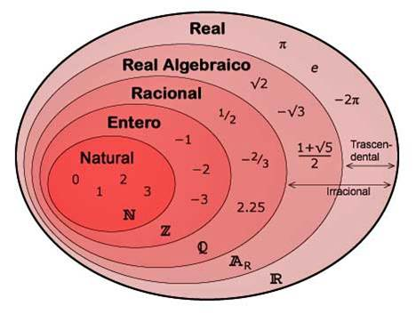
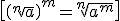

Resumen
Los números naturales son los que usamos para contar:
 = {1, 2, 3, 4, 5, 6, 7, …}
= {1, 2, 3, 4, 5, 6, 7, …}
Cuando añadimos a los números naturales el cero y los enteros negativos, obtenemos los números enteros:
 = {…, -4, -3, -2, -1, 0, 1, 2, 3, …}
= {…, -4, -3, -2, -1, 0, 1, 2, 3, …}
Cuando añadimos las fracciones a los números enteros, obtenemos los números racionales,Q
Hay números que no podemos expresar como cociente de otros dos números:

Estos números se llaman números irracionales, si los añadimos a los números racionales obtenemos números reales,  , que se representan en la recta que se llama recta real.
, que se representan en la recta que se llama recta real.
Ahora tenemos estos conjuntos de números:

El valor absoluto de un número real es el propio número, si es positivo o cero, o su opuesto, si es negativo:

En Matemáticas, un intervalo (real) es un conjunto de números reales con la propiedad de que cada número que está entre dos elementos del conjunto, también está incluido en él. Hay diferentes tipos:
- Interval abierto:

- Intervalo cerrado:

- Intervalo semiabierto o semicerrado:

- Intervalos con extremo infinito:

- Un entorno de centro a y radio r es un intervalo abierto:

- Potencia de una fracción:

- Recuerda que:

- Potencias de expònente negativo:


Entonces

En consecuencia:

Un radical es una raíz cuadrada que no puede ser reducida a un número entero. Por ejemplo, √4 = 2 no es un radical pero √5 sí, porque no da un número entero.
Se puede usar una calculadora para aproximarlo, pero muchas veces es más conveniente dejarlo como radical. Siempre hay que simplificar expresiones que lleven radicales.
Dos radicales son equivalentes si expresan el mismo número.
Dos radicales son semejantes si tienen el mismo radicando y el mismo índice.
- Suma y resta. Sólo se puede sumar o restar radicales semejantes.
- Multiplicación o división. Si los radicales tienen el mismo índice podemos juntarlos y si no lo tienen, tenemos que buscar radicales equivalentes usando el MCM
- Potencias:
-

\[{{\left( \sqrt[n]{a} \right)}^{m}}=\sqrt[n]{{{a}^{m}}}\]
La racionalización es el proceso de eliminar radicales del denominador de una fracción
El logaritmo de un número es el exponente al que hay que elevar un número fijo, llamado base, para que el resultado sea ese número.
El logaritmo de b en base a, si a>0 y a≠1, es:

PROPIEDADES:


Obra publicada con Licencia Creative Commons Reconocimiento No comercial Compartir igual 3.0